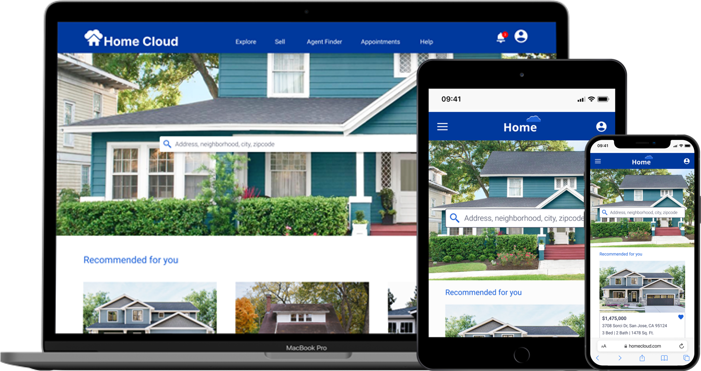

HomeCloud
Database of investment homes

To create a responsive web application that was based on the user research provided by the CareerFoundry Team.
As much of the UX research for this project was provided. I was able to primarily focus on the UI Design aspects:
To design a responsive web application that provides property buyers with information on properties of interest
UX/UI Designer
4 weeks
CareerFoundry UI Focused Course
Figma
We wanted a way for users to be able to:

Rashida
As an IT consultant for a growing tech company, Rashida is frequently on the go, and often holds meetings by phone in her car while driving. She is good at multitasking and relies heavily on technology to help her with this.
I want to provide my family with financial security. I’ve been considering buying property for a while and am looking for a tool that can help me find what I’m looking for, quickly!


Creating low fidelity wireframes helped me flexibly and efficiently explore the design ideas and also come up with high level application flow.


Creating mid fidelity wireframes, I built the foundation for the application by setting up the grid system to be used for the application layout. I created different UI elements, such as buttons, filters and search boxes. I also determined the placement of the UI elements on the page and the spacing between them.

I created 2 mood boards for the application of which one is energetic and another is serene. I chose the serene mood board for its modern and calming appearance. The blue color oriented theme creates a trustworthy and engaging experience for users.
By compiling a style guide for the visual and UI elements, I made sure that new feature creations are consistent with the brand. Custom icons, UI elements further add to the personality of HomeCloud. . The complete guide can be found here

Here, I started creating aesthetics for the application by using images, icons, and UI elements to create an enhanced version of the application. After thorough research, and getting user and feedback, I moved from using bottom navigation to left hamburger navigation, as it is widely used by web applications. Peer feedback helped me address the inconsistent width of search filters on the desktop by giving fixed width and smaller font size to the filters, which made the filter section look consistent. I focused on creating a consistent user experience across all the devices.


Home Cloud web application gave me an amazing opportunity to expand my understanding of UI Design. Throughout the process, I have learned that the secret to a great design is paying close attention to minute details of design and innovatively solving user problems. The project provided me with an opportunity to learn how to solve complex problem by providing a great user experience. I feel strongly positioned and confident to work on more such complex problems.